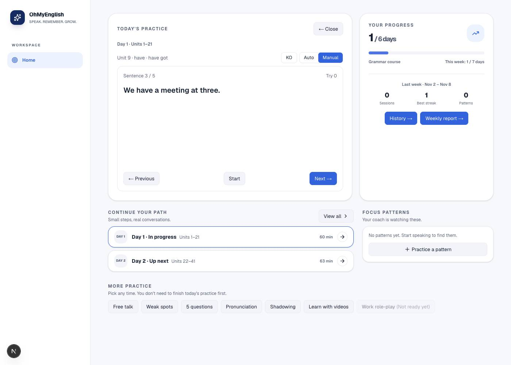
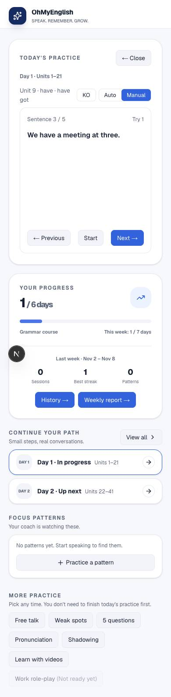
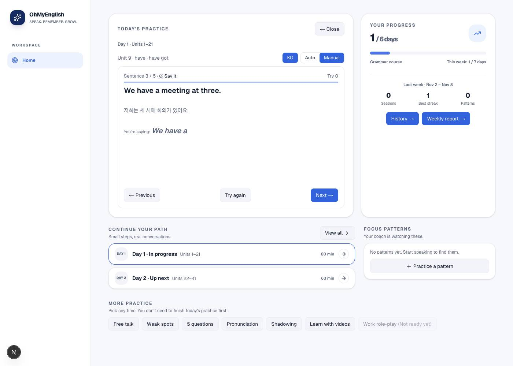
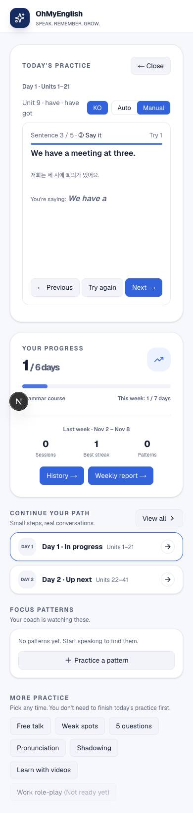
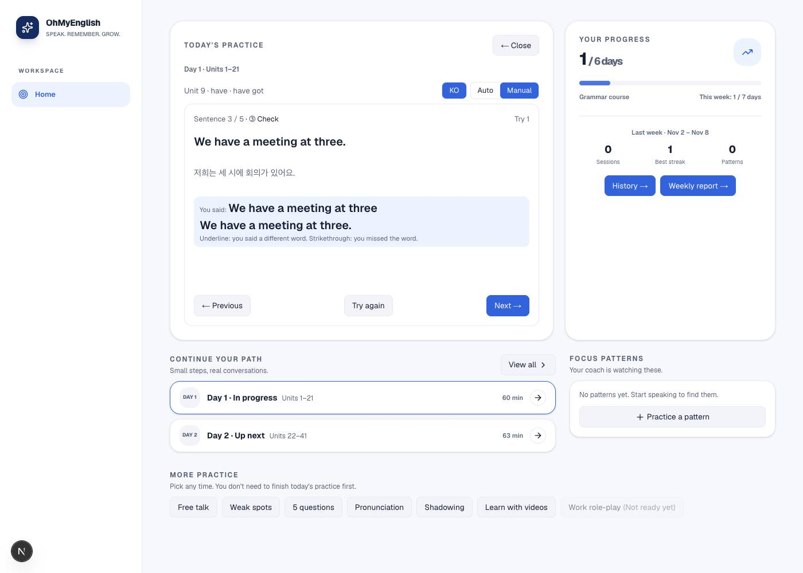
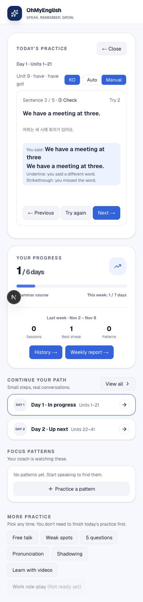
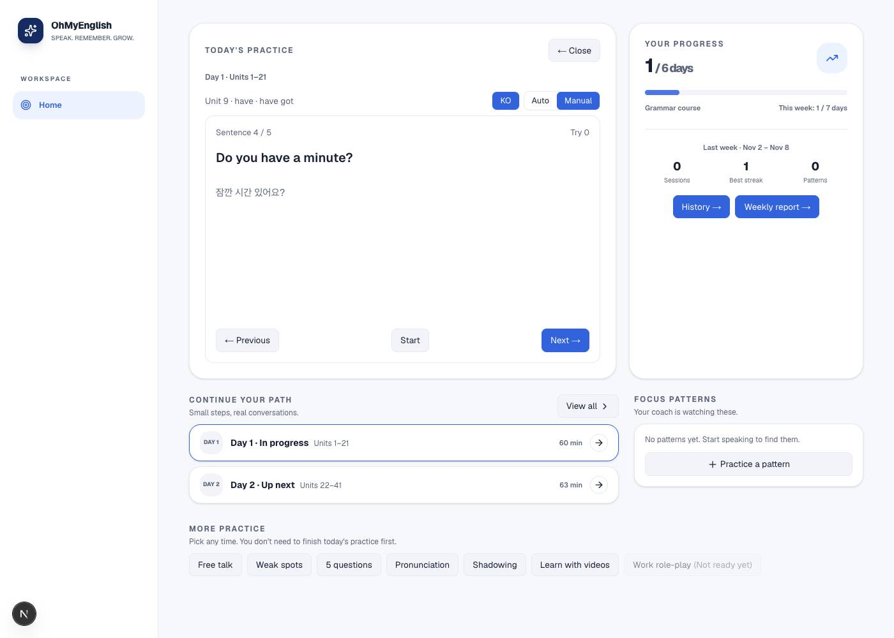
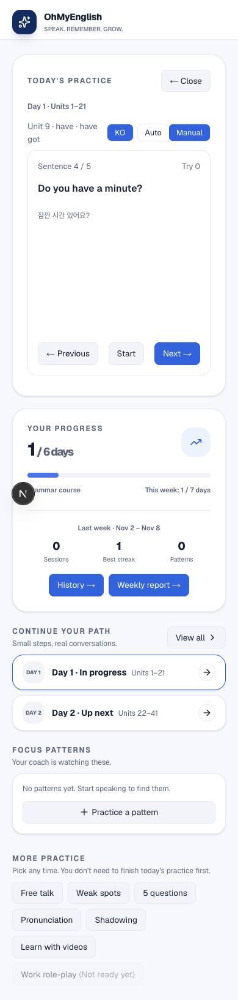
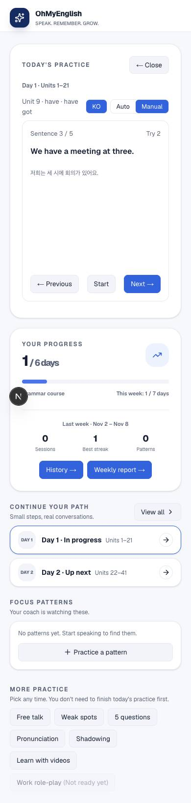

2. 홈 문장 연습 (KO 끔 · KO 켬 · 실시간 표시)
Start speaking 이 카드 안에서 현재 Day 의 문장 연습을 엶. Listen/Slow 없음. KO 를 켜면 문장 아래 한국어 번역이 나옴. 말하는 동안의 글자는 가짜 SpeechRecognition(addInitScript)으로 보였음 — 시험 Chrome 의 진짜 인식기는 가짜 오디오를 전사하지 않음.
1
Start speaking — 카드 안 문장 연습(KO 끔 · Manual)
practice-day: 「Day 1 · Units 1–21」 · course-sentence-number: 「Sentence 3 / 5」 · home-weekly-period: 「Last week · Nov 2 – Nov 8」


2
3
Start — 말하는 동안 실시간 표시(가짜 인식기)
practice-day: 「Day 1 · Units 1–21」 · course-sentence-number: 「Sentence 3 / 5」 · course-translation-text: 「저희는 세 시에 회의가 있어요.」 · course-live: 「You're saying: We have a」 · home-weekly-period: 「Last week · Nov 2 – Nov 8」


4
판정 결과 — 말한 내용(문장과 같은 글자)
practice-day: 「Day 1 · Units 1–21」 · course-sentence-number: 「Sentence 3 / 5」 · course-translation-text: 「저희는 세 시에 회의가 있어요.」 · course-transcript: 「We have a meeting at three」 · home-weekly-period: 「Last week · Nov 2 – Nov 8」


5
Next → — 다음 문장
practice-day: 「Day 1 · Units 1–21」 · course-sentence-number: 「Sentence 4 / 5」 · course-translation-text: 「잠깐 시간 있어요?」 · home-weekly-period: 「Last week · Nov 2 – Nov 8」


6
← Previous — 앞 문장으로 돌아옴
practice-day: 「Day 1 · Units 1–21」 · course-sentence-number: 「Sentence 3 / 5」 · course-translation-text: 「저희는 세 시에 회의가 있어요.」 · home-weekly-period: 「Last week · Nov 2 – Nov 8」

7